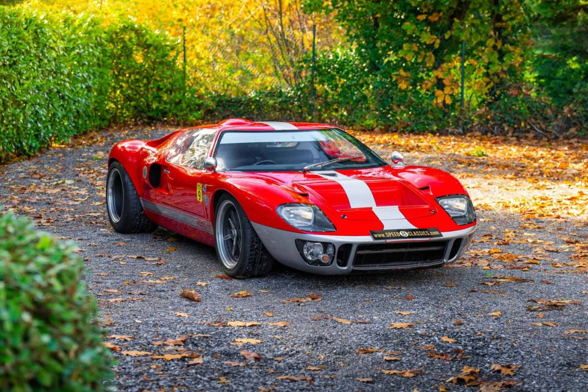
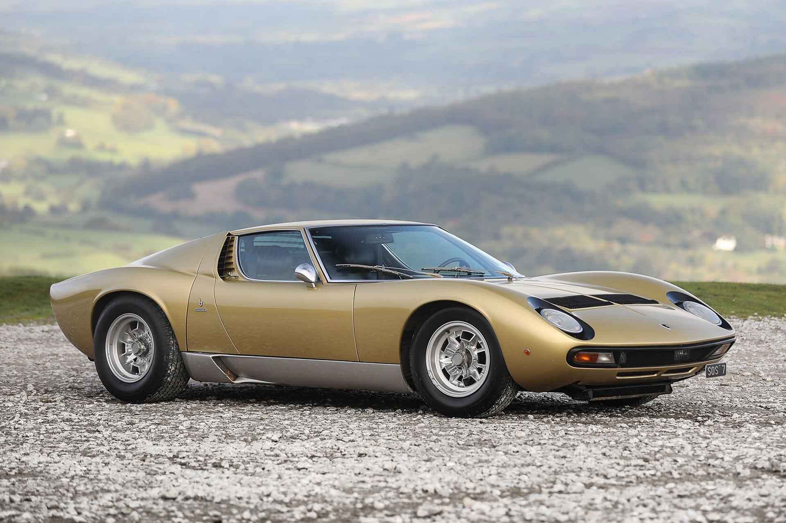
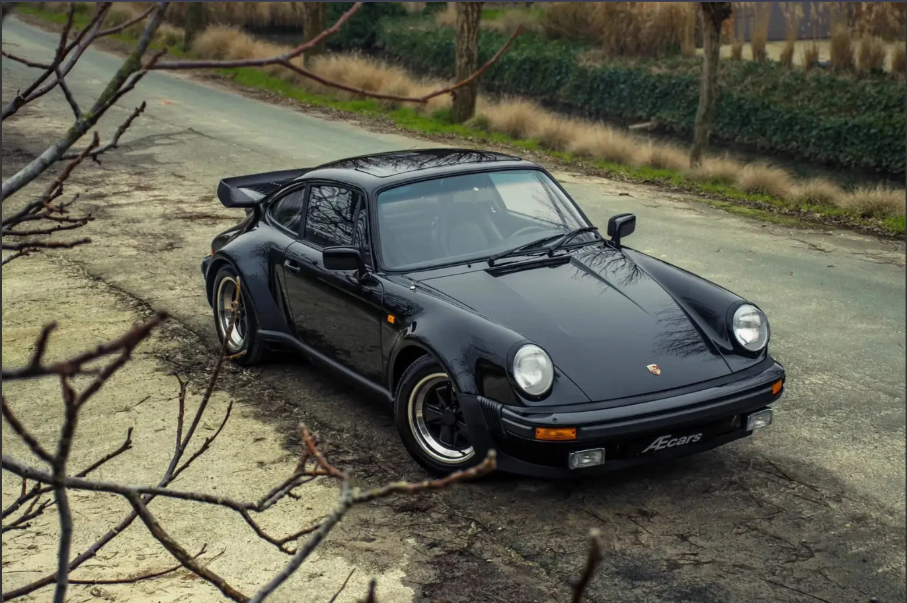
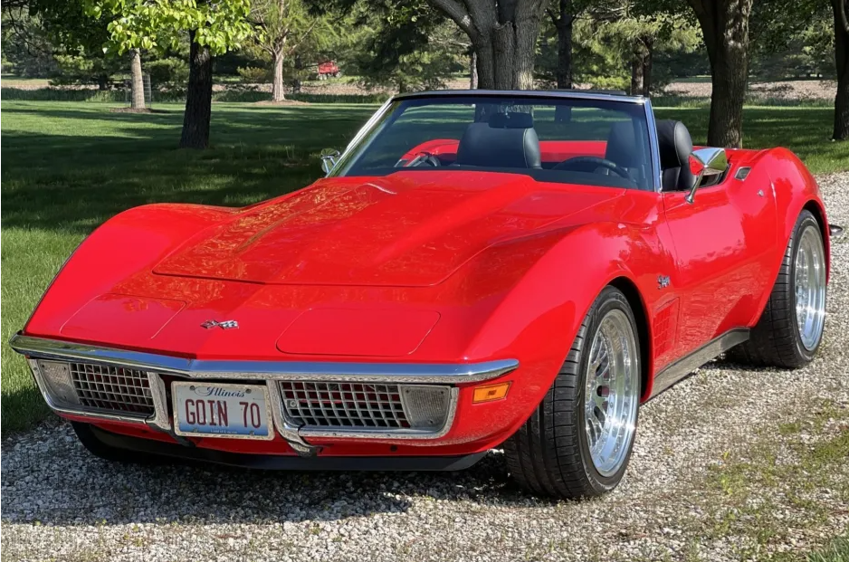
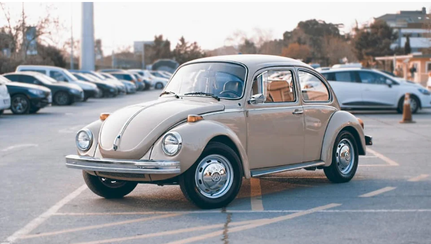

| El origen | La obsesión | El nacimiento | El triunfo |
|---|---|---|---|
| A inicios de los 60s, Henry Ford II intentó comprar Ferrari, pero Enzo Ferrari canceló el trato a último minuto. | Furioso, Ford ordenó crear un auto exclusivo para humillar a Ferrari en las 24 Horas de Le Mans. | Tras fracasar, Ford reclutó a Carroll Shelby, quien rediseñó el auto e integró un motor V8 americano. | El Ford GT40 logró un histórico triplete en Le Mans en 1966, rompiendo el dominio de Ferrari. |

| El origen | La filosofía | El desarrollo clandestino | El nacimiento |
|---|---|---|---|
| Ferruccio Lamborghini fabricaba tractores y fundó su marca de autos porque Enzo Ferrari ignoró sus quejas sobre el embrague de su Ferrari. | Ferruccio quería autos de gran turismo refinados, prohibiendo a sus ingenieros diseñar autos de carreras. | Tres ingenieros trabajaron en secreto por las noches para crear un chasis con el motor en el centro. | Cuando le mostraron el concepto a Ferruccio, quedó impresionado y aprobó su producción, creando el Miura en 1966, considerado el primer "superdeportivo" de la historia. |

| El origen | El diseño | El conflicto del nombre | El nacimiento |
|---|---|---|---|
| A finales de los 50s, Porsche necesitaba un sustituto para su exitoso pero ya anticuado modelo 356. | Ferdinand Alexander "Butzi" Porsche, nieto del fundador, diseñó las líneas fluidas y atemporales de un coupé deportivo de cuatro plazas. | El auto se presentó en 1963 como "Porsche 901", pero la marca Peugeot protestó porque tenían los derechos exclusivos de nombrar autos con tres dígitos y un cero en medio. | Porsche simplemente cambió el cero por un uno, dando origen en 1964 al legendario Porsche 911, un ícono que mantiene su silueta esencial más de 60 años después. |

| El origen | El tropiezo | El salvador | El nacimiento |
|---|---|---|---|
| Harley Earl, el jefe de diseño de General Motors, notó que los soldados estadounidenses que regresaban de Europa tras la Segunda Guerra Mundial preferían los autos deportivos británicos y europeos. | El primer Corvette nació en 1953 con una carrocería de fibra de vidrio innovadora, pero su motor de 6 cilindros era lento y su transmisión automática decepcionó a los entusiastas. Estuvo a punto de ser cancelado. | El ingeniero Zora Arkus-Duntov (un piloto europeo) se enamoró del concepto y convenció a GM de instalar un potente motor V8 y mejorar la suspensión. | Gracias a esta reingeniería y a la feroz competencia con el Ford Thunderbird, el Corvette se transformó en el verdadero "auto deportivo de América". |

| El origen | La posguerra | El renacimiento | El nacimiento |
|---|---|---|---|
| En la década de 1930, el régimen alemán encargó al ingeniero Ferdinand Porsche el diseño de un "auto del pueblo" (Volkswagen), barato, robusto y capaz de transportar a una familia. | Tras la Segunda Guerra Mundial, la fábrica quedó en ruinas. El ejército británico tomó el control de la planta y ofreció el diseño a marcas como Ford, quienes lo rechazaron argumentando que el auto era "demasiado feo y ruidoso". | Bajo la dirección de Heinz Nordhoff, la producción se reinició enfocándose en la máxima confiabilidad y un marketing brillante y honesto (como la famosa campaña "Think Small"). | El Escarabajo (Beetle) superó su oscuro origen político para convertirse en el símbolo de la contracultura de los años 60, el auto más vendido del mundo en una sola plataforma y un ícono global de simpatía. |